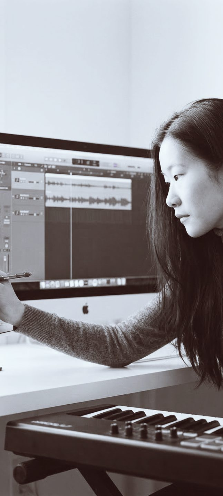

作曲、音楽理論・和声・分析、ソルフェージュ
作曲やDTMを始めたい方。楽譜の読み方や音楽理論からでも進められます。

20 Hz – 20 kHz
色を見比べる：SpectrumCobaltMonoEmberPrism
聴く_
AtelierComposition Son
オンラインレッスン作曲・理論・電子音楽
ateliercompositionson.com/ja
オンライン作曲・ソルフェージュ
DTM・電子音楽
講師

Sachie Kobayashi
作曲家、アーティスト、教育者。
東京芸術大学作曲科卒業後、スイス・フランスで学び、パリを中心に活動した経験のある作曲家・アーティストです。クラシック音楽の基礎から、現代音楽、電子音響、サウンドデザイン、Max/MSP、AIを用いた制作まで、一人ひとりの関心や作品に合わせて指導します。
オンラインを「代替手段」ではなく、距離を越えるための選択として選びました。世界中で学んだことを、世界のどこにいる人とも分かち合える。それが、私がオンラインで教える意味だと思っています。
ジュネーブ高等音楽院 音楽教育修士。IRCAM作曲研究課程修了、VR、インスタレーション。スイスの音楽院での指導経験。日本・スイス・フランスでの制作と作品発表。Le Fresnoy、Klangforum Wien、Ensemble Proton Bern、IRCAM との共同制作。
作品


レッスン制作を始める初心者から、プロの方まで。
作曲やDTMを始めたい方。楽譜の読み方や音楽理論からでも進められます。

独学で曖昧になった理論や、DAW・録音環境を、制作中の作品に沿って整理します。

作品、音源、ポートフォリオ、音大・芸大受験や海外音楽院への提出物を検討します。公募や継続プロジェクトも個別に扱います。
考え方
音楽を学ぶことは、音をもう一度聴き直すことから始まる。
住んでいる国も、普段聴いている音楽のジャンルも関係ありません。クラシック、ポップス、電子音楽、映画音楽、即興。垣根を越えて、音楽について考え、学ぶ質の高い時間を、ここでお渡ししたいのです。
理論やソフトの操作は、制作中の作品や課題に合わせて学びます。
音色、響き、空間、時間の感じ方を、実際に音を聴きながら考えます。
DAW、Max/MSP、録音、AI、Python、電子音響、映像制作などを必要に応じて扱います。
進め方
これまでの経験、学びたいこと、使っているソフトや機材について伺います。
楽譜、音源、DAWプロジェクトなどを使い、必要な理論と技術を学びます。
レッスンの内容を振り返り、次回までに取り組むことを決めます。
料金単発または継続
| Foundation | 作曲・理論・DTMの基礎を、作品を作りながら学びます。 | 4,800円60分 |
|---|---|---|
| Individual Session | オリジナル教材を使った専門的なレッスン。作品、楽譜、音源、和声・対位法、分析、AIで制作した音源を、制作テーマに合わせて深く扱います。7日以内のメールでの質問に、簡潔なフィードバックつき。 | 7,500円70分 |
| Monthly Atelier | 月2回から、ご希望に合わせて制作や学習を継続します。 | 応相談 |
| Text Feedback | 楽譜、音源、課題に文章でフィードバックします。 | 1,800円〜 |
海外在住の方は、基本的にお住まいの土地に合わせた料金になりますのでご相談ください。
受講者の声
オンラインでも通信環境が安定していて、安心して受講できました。こちらの希望や学びたい内容を丁寧に聞いていただき、レッスンに反映してもらえた点がとても良かったです。
自分の現在のレベルや目的に合わせて、必要な内容を整理しながら教えていただけたのが印象的でした。今後どのように学んでいけばよいかが明確になりました。
限られた時間の中でも、とても分かりやすく丁寧に教えていただきました。楽典の面白さや奥深さを感じることができました。
よくある質問
はい。レッスンはオンラインのため、遠方や海外からでも受講できます。ジャンルはなんでも歓迎です。ロックから実験音楽まで、さまざまな音楽を学ぶ生徒さんがいます。
はい。楽譜、DTM、音楽理論の経験がなくても受講できます。興味のある音楽や、やってみたいことから始めます。
はい。音大・芸大受験、海外音楽院への出願、作品提出、公募、ポートフォリオについてご相談いただけます。
Reaper、Ableton Live、Logic Pro、Max/MSPなどに対応しています。MIDI・OSC、AI生成ツール、映像を組み合わせた制作もご相談いただけます。
無料相談 · 30分